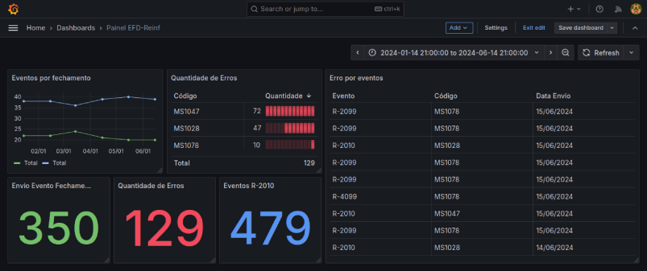

Monitoramento na prática usando Grafana para acompanhar envios de eventos da EFD-Reinf
Neste post, compartilho conhecimentos sobre tecnologias que podem contribuir para o desenvolvimento de projetos escaláveis.
A observabilidade com Grafana é um tema que muitos desenvolvedores já conhecem ou experimentaram, no entanto, há um ponto que precisa ficar claro: usar apenas o Grafana não significa que você possui uma solução completa de observabilidade. pois a observabilidade é composta por três pilares principais:
- Métricas
- Logs
- Traces
...que, quando combinados, oferecem uma visão abrangente do sistema, e o Grafana cobre apenas uma parte dessa abordagem.
Para relembrar, o Grafana é uma poderosa ferramenta de monitoramento em tempo real, ele se conecta a um banco de dados onde os dados são armazenados e apresenta esses dados de maneira visual e interativa, permitindo uma visão ampla e detalhada do sistema.
Usando o Grafana, é possível analisar a performance de uma funcionalidade ao longo do tempo e identificar tendências e problemas. Essa visualização não é apenas “bonita” — ela é essencial para entender como os usuários estão utilizando a aplicação e onde estão os gargalos, e com essas informações, é possível otimizar recursos e aprimorar a experiência para os clientes, incluindo ajustes em tempo real.
Um pequeno cenário porém muito importante
Aviso importante: Este cenário é um cenário simples e pequeno apenas para demonstrar uma falha e uma chamada para correção, então não se baseia em uma simples dashboard com intuíto educacional com uma dashboard que precisa ser feito em um ambiente real.
Vou demonstrar aqui usando um pequeno cenário, muito pequeno mesmo para vocês entenderem na prática como podemos através do monitoramento pinçar um problema que pode ser muitas vezes invisível sem um monitorament.
Contextualizando
Neste exemplo interessante, temos um cenário de envio de eventos de impostos para o eCAC, que é um portal eletrônico da Receita Federal, onde empresas que emitem notas fiscais com retenções de INSS, PIS, COFINS, CSLL e Agregados precisam enviar mensalmente esses dados como parte da EFD-Reinf (Escrituração Fiscal Digital de Retenções e Outras Informações Fiscais), sendo um envio obrigatório que deve ocorrer entre os dias 1 e 15 de cada mês (não se esqueça dessa data hehe).
Com o Grafana, é possível monitorar o desempenho desse processo ao longo do tempo, identificando padrões nas entregas dos clientes e buscando pontos de melhoria na ferramenta, o que permite otimizar a plataforma para maior eficiência no envio e redução de possíveis erros de processamento, ajudando as empresas a cumprir essa exigência legal de maneira ágil e precisa.
Entendendo os dados
Primeiro vamos vou mostrar uns dados e vamos entender o que se passa nesses logs, e é claro que o céu é o limite quando se fala em melhorar quais dados metrificar para o monitoramento, mas vamos nos atentar em apenas um problema comum, e que a correção não será tratado nesse post, mas é uma maneira de entendermos que em algum momento de nosso microserviço está falhando na missão.
Neste cenário coloquei apenas alguns dados para demonstrar um pequeno problema, então não se baseia em uma dashboard completa referente a analisar envios de eventos da EFD-Reinf, então vou demonstrar o que é o que aqui:
- R-2010: Evento referente à retenção de contribuição previdenciária (INSS) sobre serviços tomados. É utilizado para declarar valores retidos de prestadores de serviço.
- R-2099: Evento de fechamento dos eventos periódicos na EFD-Reinf, que consolida e encerra os envios do período, permitindo que os dados sejam validados e processados pelo sistema da Receita Federal.
- MS1047: Código de erro que indica que o valor informado deve ser igual a 11% da base de cálculo da retenção de contribuição previdenciária. Esse erro ocorre quando o valor informado diverge da base esperada.
- MS1078: Código de erro que ocorre quando o valor retido informado excede o limite permitido para a base de cálculo da contribuição previdenciária.
- R-2099: R-2099: Evento de fechamento dos eventos periódicos na EFD-Reinf para retenções previdenciárias. Utilizado para consolidar e encerrar os dados de um período, indicando que todas as informações de retenção de INSS foram corretamente enviadas à Receita Federal.
- R-4099: Esse evento finaliza o envio dos dados periódicos relacionados a tributos como PIS, COFINS, CSLL e impostos retidos em geral na EFD-Reinf. É utilizado para consolidar e encerrar as informações desses tributos no período, confirmando que todas as obrigações associadas foram reportadas à Receita Federal.
Vou apresentar um cenário que pode nos ajudar a melhorar nossa aplicação, vendo que um erro está aparecendo muitas vezes.
Nesse painel acima, estamos observando uma quantidade significativa de ocorrências do erro MS1047 ao longo do período, e esse erro indica que "O valor informado deve ser igual a 11% da base de cálculo da retenção da contribuição previdenciária."
Esse erro ocorre quando o valor inserido pelo cliente no campo de retenção de INSS em uma nota fiscal difere de 11% da base de cálculo correspondente e ao transmitir essa informação ao eCAC, o sistema retorna o erro, exigindo que o cliente corrija o valor diretamente no ERP.
A grande questão !
Diante disso, surge a seguinte questão: como podemos melhorar a tela de cadastro da nota fiscal para que o cliente insira corretamente o valor da retenção? Essa é uma pergunta que temos que refletir para evitar que o cliente por algum motivo não erre no calculo.
Corrigindo... fazendo testes...
Conclusão
Em resumo, é fundamental compreender a importância do uso do Grafana para monitoramento das suas aplicações, no entanto, mais do que criar métricas por criar, é essencial planejar e implementar melhorias constantes para obter uma visão mais ampla e estratégica, e vale lembrar que o Grafana, isoladamente, não constitui uma solução completa de observabilidade, pois, para alcançar uma visão realmente abrangente, é necessário integrá-lo a outras ferramentas de monitoramento mencionadas anteriormente.
Aprendemos que, sem um monitoramento eficaz e atualizações frequentes, poderíamos nunca identificar áreas que precisam de melhorias para fortalecer nossa aplicação, já que o painel no Grafana permite otimizar a ferramenta e detectar erros em tempo real, inclusive recorrências que podem causar insatisfação dos clientes e dificultar o cumprimento de suas obrigações fiscais, o que, a longo prazo, pode levar à perda de clientes, sendo assim, a eficácia desse painel é crucial para assegurar um serviço confiável e eficiente.
Bom... espero que este post tenha te ajudado de alguma forma, então até a próxima.